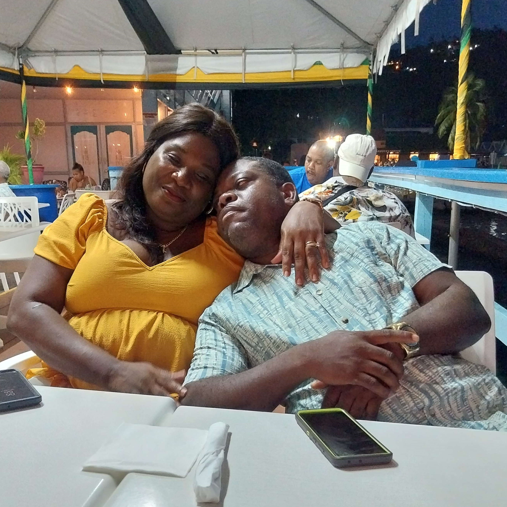

Hurricane Beryl and JPS vs My Summer!
September 30, 2024 by Dejone Watson
As we all know, this past summer was a time! I got to enjoy a fairly chill month of June! It was admittedly a little lonely, if I'm being honest, because my mom and little sister were out all day at school and my dad worked the farm then went up to the bar after. My mom was determined to make this a fun summer for us, given her intent to make sure I spend summer 2025 working my behind off on work and travel. Oh, the best laid plans of mice and men!
And now, here comes Sir Beryl! I was stressed out, honestly! My parents were being weirdly nonchalant about it all, only stocking about the day before like crazy people. And wouldn't you know it, the family cat, Oz, somehow developed an abscess right before! Before the hurricane even hit, the ackee tree near my room gave up the ghost like a coward. We lost light in the 9 am and when I tell you, we didn't get it back for the next 17 DAYS! And we only got it because my dad had a friend who was apart of a contracting team who got them to come our way! Not to mention, literally right after, because they didn't restore the area where the pump was, within 24 hours, water finally ran out of our tanks. We only got to comfortably enjoy our summer again in late August! In time for one beach trip and us all going on my parent's aniversary date. On the bright side, I got some very cute pictures of my parents being dorky!